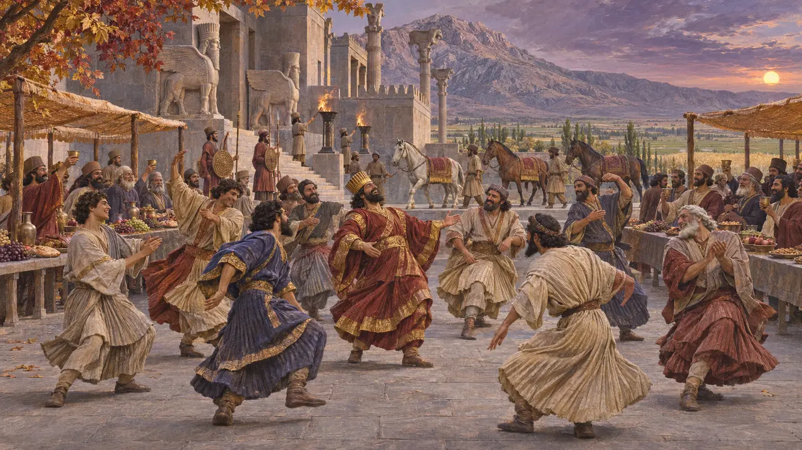
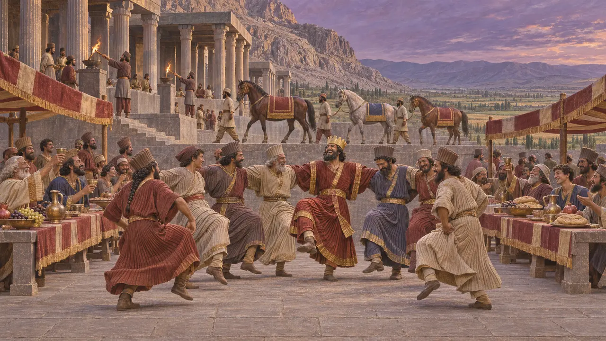
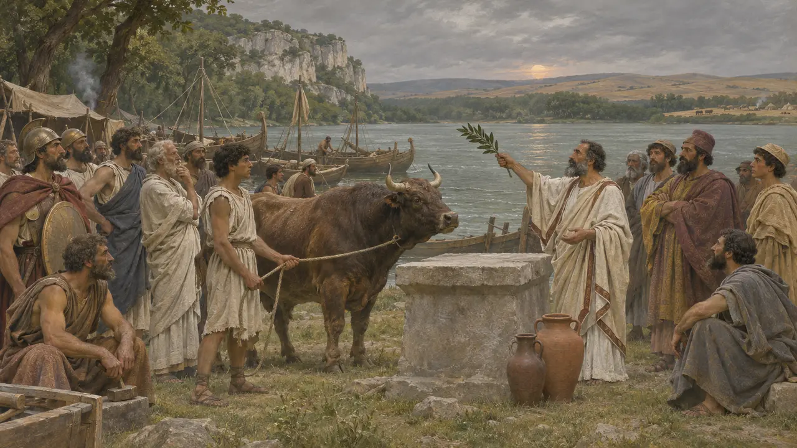

Enciclopédia › Deuses e festas
A festa de Mitra
O único dia em que o Rei podia se embriagar
Escritores gregos conheciam uma festa persa de Mitra, as Mitrakana. É a festa iraniana mais bem atestada da era aquemênida, embora não por um texto persa.
No jogo: A festa de Mitra vem no outono. Vinho e carne a tornam grandiosa.

Um rei bêbado
Relato antigoCtésias e Duris, citados por Ateneu, dizem que só na festa de Mitra o rei persa pode se embriagar e dançar a dança persa. Ctésias era médico na corte de Artaxerxes II, então isso é cerca de um século depois dos nossos níveis.
Athenaeus 10.434e

Vinte mil potros
Relato antigoEstrabão diz que o sátrapa da Armênia mandava ao Rei 20.000 potros por ano para as Mitrakana. É um número grande de uma fonte tardia, mas o nome está lá.
Strabo 11.14.9

Qual mês
Nos registrosO artigo da Iranica sugere que o nome Mehregan veio com a reforma do calendário do fim do século V. No próprio calendário de Dario, o mês de outono é Bagayadi, "do culto do deus", e qual deus é ele mesmo é discutido. A data do jogo cai nesse mês.
Iranica, "Mehragan"; Behistun, DB
Fontes
- Athenaeus 10.434e
- Strabo 11.14.9
- Encyclopaedia Iranica, "Mehragan"